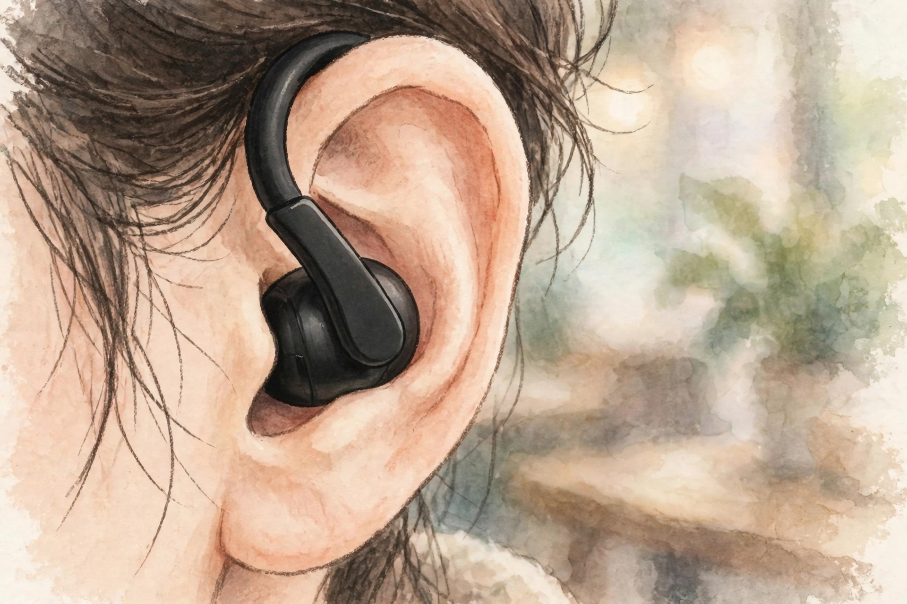

2026년 10월 23일

삼성전자가 귀에 꽂는 대신 귀에 가볍게 걸쳐 쓰는 무선 이어폰을 내놓습니다. 갤럭시 버즈 시리즈 첫 클립형 이어폰 '갤럭시 버즈 온'은 오는 27일 정식 출시되며, 가격은 29만 9천원, 색상은 블랙 한 가지입니다.
20일 삼성전자가 공개한 개발 스토리에 따르면, 착용감에 가장 공을 들였다고 합니다. 사람마다 귀 모양이 다른데다 장시간 착용과 운동 중에도 안정적으로 고정돼야 해서인데요. 4차원(4D) 컴퓨팅 기반 AI 최적화 기술로 다양한 착용 상황을 시뮬레이션하고, 귀 형태에 따라 유연하게 움직이는 형상기억합금 밴드를 적용했다고 합니다.
제미나이 라이브를 이어폰으로 바로 부를 수 있다는 게 제일 와닿네요. 질문할 때마다 호출어를 반복하지 않고 대화를 이어갈 수 있다고 하니, 갤럭시와 함께하는 일상에서 AI 비서가 한 발 더 가까워지는 느낌입니다. 고개만 끄덕여 전화를 받는 헤드 제스처도 운동 중에 써보고 싶어집니다.
출처: 데일리포스트 — 삼성전자, 착용감·음질·AI 갖춘 '갤럭시 버즈 온' 개발 스토리 공개 · 한국경제 — 이어폰 귀에 꽂지 마세요…삼성이 내놓은 20만원대 신제품